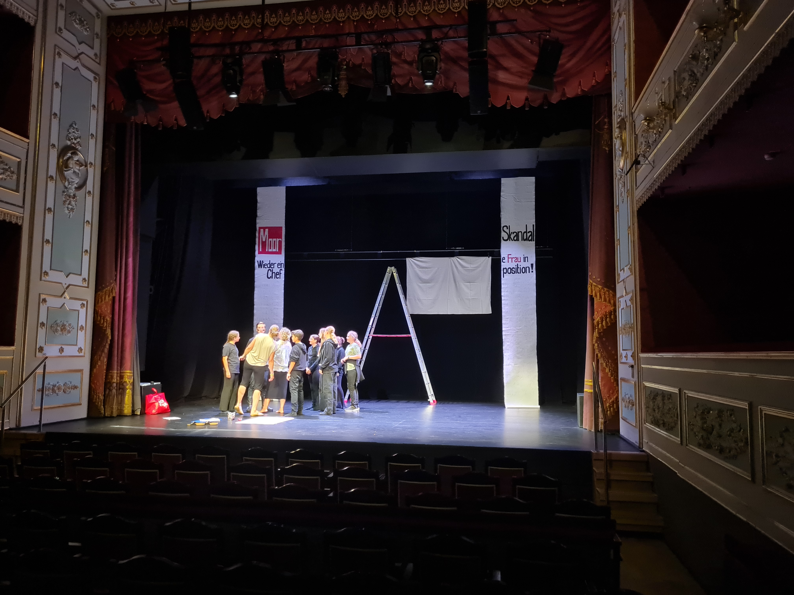
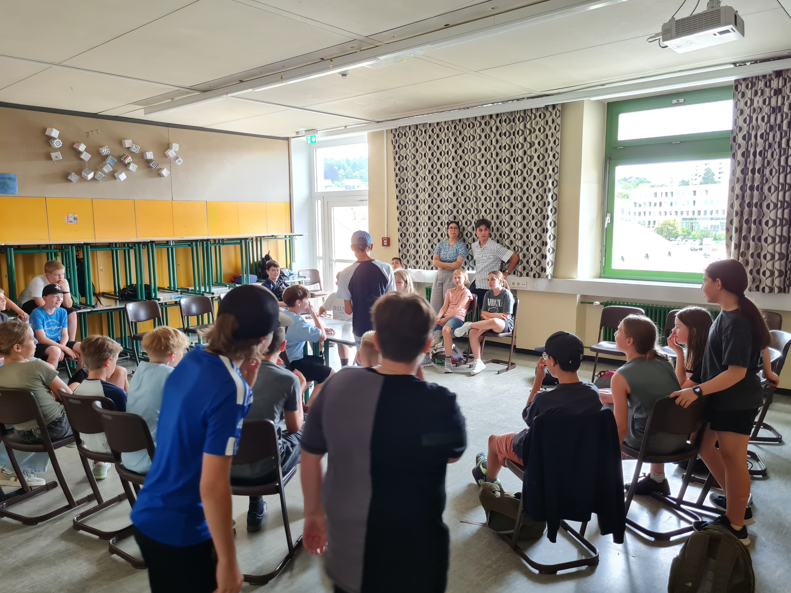
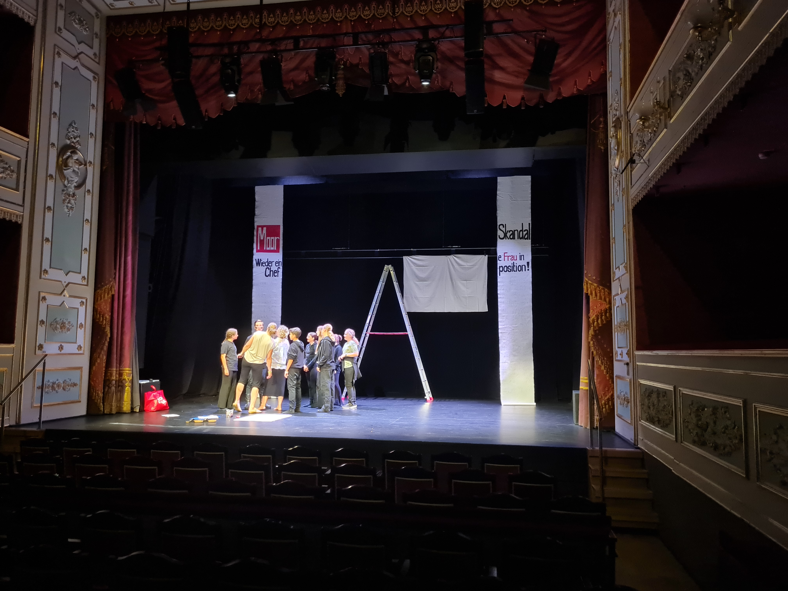
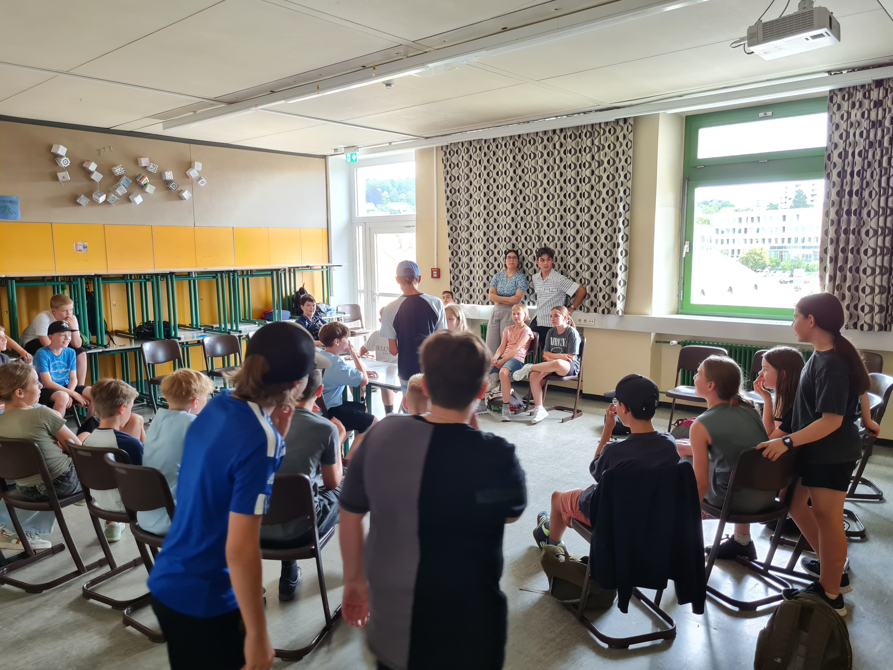

Der zweite Tag..
 



…setzte die Theatertage am Vormittag mit dem 3. Stück „Enya und die andere Welt“ von der Theatergruppe des Veit-Höser-Gymnasiums aus Bogen im Amberger Stadttheater fort. Das Stück handelt von dem Mädchen Enya, das in eine Spiegelwelt versetzt wird und dort auf eine Hexe trifft, die versucht sie davon abzuhalten, aus der Spiegelwelt zu entkommen.
Anschließend wurden die Gruppen im Café Zentral und im Restaurant „Heimatgenuss“ der Brauerei Bruckmüller verköstigt. Dort gab es unter Anderem Schnitzel mit Pommes oder auch Käsespätzle.
Künstlerisch setzten die Theaterspielenden des Johann-Schöner-Gymnasiums aus Karlstadt mit ihrem Stück „Nie genug“, eine Neufassung von Schillers „Die Räuber“, die Theatertage fort. Danach kehrten die Gruppen an das GMG zurück, wo eine Besprechung der Stücke sowie das Abendessen auf dem Programm standen.
Die regional sehr beliebte Kirwaband „Quertreiber“ bewies als krönenden Abschluss des Tages ihre musikalischen Fähigkeiten und brachte unsere Schulaula für 2 Stunden zum Beben. Mit unterschiedlichsten Liedern von den 90er über Hip-Hop bis hin zu bayerischen Liedern bescherten sie allen Beteiligten einen unvergesslichen Abend.